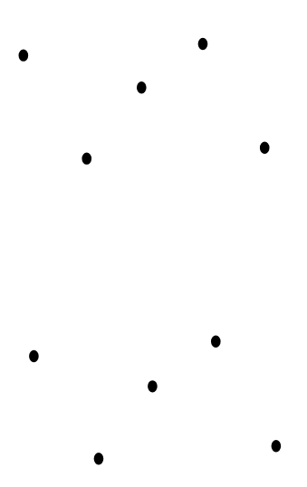
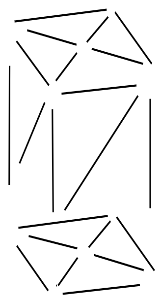
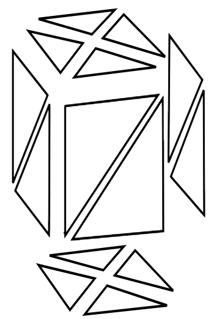

Dipartimento di Informatica - Scienza e Ingegneria
Corso di Laurea in Ingegneria e Scienze Informatiche
Presentata da: Gabriele Fronzoni
Relatore: Prof. Damiana Lazzaro
Sessione Unica
Anno Accademico 2024/2025
Da cosa sono caratterizzate?
Vertici
Spigoli
Facce
Facce trending_flat Nodi
Spigoli trending_flat Archi
def: training_gcns(K, NumEpochs):
GCN = [GCN_1, ..., GCN_k]
opt_function = [opt_1, ..., opt_k]
loss = MSE(n, n_gt)
for epoch in range(NumEpochs):
for each batch in TrainingSet:
n_curr = n_noise
loss_t = 0
for i in range(K):
G = build_graph(n_curr)
n_pred = GCN[i].forward(G)
loss_s = loss(n_pred, n_gt)
loss_t += loss_s
n_curr = n_pred
for i in range(K):
opt_function[i].zero_grad()
loss_t.backward()
for i in range(K):
opt_function[i].step()
eval_model()
print_metrics()
...ma come vengono scelte le facce?
Per ogni faccia che appartiene alla patch, si indicano:
Tutti gli attributi vengono normalizzati
EdgeConv: $ F^i_{l+1} = \underset{j:(i,j) \in E_l }{\Psi}\,h^l_{\Theta}\,(F^i_l, F^j_l) $
La convoluzione non è solo statica...
... ma anche dinamica
Il grafo viene ricostruito in maniera dinamica usando l'algoritmo K-nearest-neighbors (KNN) \[ \mathcal{N}_k(f_i) = \underset{S \subset \mathcal{F}, |S|=k}{\text{argmin}} \sum_{f_j \in S} d(f_i, f_j) \]
Prevede due fasi:
1. Raffinamento delle normali
Perché? trending_flat regolarizzare le normali e evitare discontinuità locali
2. Aggiornamento dei vertici
Si introducono due nuove features
$\alpha^n$: angolo di intensità del rumore
\[ \alpha^n = \text{acos}(n_i \cdot n_i^M)\]Perche? trending_flat La rete originale non era in grado di ricostruire una superficie se coperta da rumore ad alta intensità
$\alpha^g$: angolo delle caratteristiche geometriche
\[ \alpha^g_i = \max_{f_j \in \mathbb{P}^2_i}\,\max_{f_l \in \mathbb{P}^2_i}\, \text{acos}(n_j^M \cdot n_l^M).\]Perche? trending_flat La rete originale assume che la natura del rumore e delle caratteristiche geometriche sia diversa
La struttura dell'input cambia...
...quindi cambia anche la struttura della rete!
Vediamo alcuni risultati...
In cosa migliora?
Recupero della superficie con alti livelli di rumore
Grazie per l'attenzione